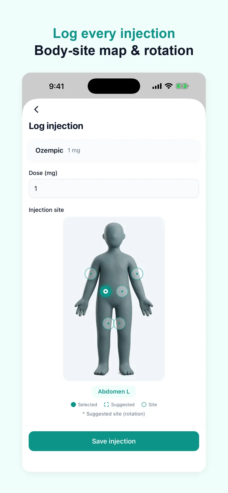
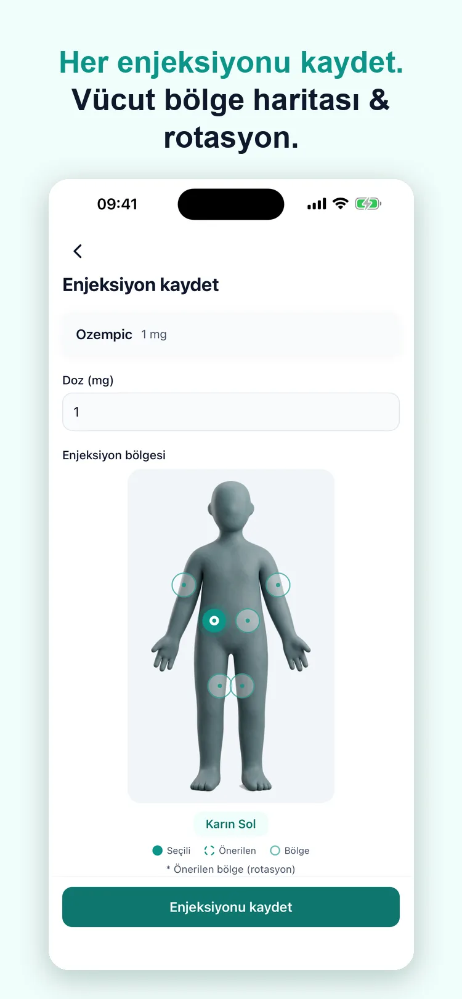

Rotate your sites without keeping notes
Bölgeleri not tutmadan değiştir
The problem
Rotation is one of those things that is simple in principle and impossible to hold in your head. Six sites, one injection a week, and a note somewhere that you stopped updating in March.
Sorun
Rotasyon, ilkesi basit ama akılda tutulması imkânsız şeylerden biri. Altı bölge, haftada bir enjeksiyon ve mart ayında güncellemeyi bıraktığın bir not.
What Dozify does
A map instead of a memory
Tap where you injected. The next time, the spot you have used least recently is already selected.
Your own site names
If you rotate somewhere the diagram does not name, write it in. The app will not draw an anatomy it does not know, but it will remember your label.
A gentle warning, not a rule
Pick a site you used last week and the app says so. It does not stop you — it is your body and your clinician's instruction.
Dozify ne yapıyor
Hafıza yerine harita
Nereye yaptığına dokun. Bir sonraki sefer, en uzun süredir kullanmadığın bölge zaten seçili gelir.
Kendi bölge adların
Diyagramın adlandırmadığı bir yeri kullanıyorsan kendin yaz. Uygulama bilmediği bir anatomiyi çizmez ama senin etiketini hatırlar.
Kural değil, nazik bir uyarı
Geçen hafta kullandığın bir bölgeyi seçersen söyler. Engellemez — beden senin, talimat doktorunun.


Who this helps
People who have been told to rotate and not given a way to keep track of it, and people who have started to notice that one patch of the abdomen feels different from the rest. It also helps anyone injecting more than once a week, where the pattern is harder to hold in your head than a single weekly spot.
Kimin işine yarar
Rotasyon yapması söylenmiş ama bunu nasıl takip edeceği anlatılmamış kişiler ve karnının bir bölgesinin diğerlerinden farklı hissettirdiğini fark etmeye başlayanlar. Haftada birden fazla enjeksiyon yapan herkes için de: desen, tek bir haftalık noktaya göre akılda tutması çok daha zor.
Where it stops
The body map records where you injected and suggests which area comes next in the rotation. It does not examine the site: it cannot tell you whether the skin there is suitable today, and a lump or a hardened area is something to show a clinician, not something an app should judge. The approved areas come from the manufacturer's instructions for your medication, and those instructions are what to follow if they differ.
Nerede duruyor
Vücut haritası nereye yaptığınızı kaydeder ve rotasyonda sıradaki bölgeyi önerir. Bölgeyi muayene etmez: oradaki cildin bugün uygun olup olmadığını söyleyemez; şişlik ya da sertleşmiş bir alan bir uygulamanın karar vereceği değil, hekime gösterilecek bir şeydir. Onaylı bölgeler ilacınızın üretici talimatlarından gelir; farklılık varsa uyulacak olan o talimatlardır.
Private by default
Your health records stay on your device and are never uploaded. There is no account and no cloud sync. Usage statistics never carry a medication name or a symptom — details in the privacy policy.
Varsayılan olarak gizli
Sağlık kayıtların cihazında kalır ve hiçbir yere yüklenmez. Hesap yok, bulut senkronu yok. Kullanım istatistikleri hiçbir zaman ilaç adı veya belirti taşımaz — ayrıntılar gizlilik politikasında.
Download on the App Store App Store'dan indir
Questions
Sorular
Which sites can I choose from?
Hangi bölgeler arasından seçebilirim?
The abdomen, the thigh and the upper arm, split into left and right and into the areas within each. Those are the areas the manufacturers' instructions describe for subcutaneous GLP-1 injections.
Karın, uyluk ve üst kol; sağ ve sol olarak ve her birinin içindeki alanlara ayrılmış hâlde. Bunlar üretici talimatlarının deri altı GLP-1 enjeksiyonları için tarif ettiği bölgelerdir.
How does the suggestion work?
Öneri nasıl çalışıyor?
It looks at where your recent injections went and points at the area you have used least recently. It is a suggestion on the screen, not a rule — you can log anywhere you actually injected.
Son enjeksiyonlarınızın nereye gittiğine bakar ve en uzun süredir kullanmadığınız bölgeyi gösterir. Ekranda bir öneridir, kural değil — gerçekten nereye yaptıysanız oraya kaydedebilirsiniz.
Does it warn me if I use the same spot again?
Aynı noktayı tekrar kullanırsam uyarır mı?
It shows you what you have used recently, so a repeat is visible before you log it. It does not block anything; you may have a reason, and the app does not overrule you.
Son kullandıklarınızı gösterir; tekrar, kaydetmeden önce görünür olur. Hiçbir şeyi engellemez — bir sebebiniz olabilir ve uygulama sizin kararınızı geçersiz kılmaz.
I inject in the same area every time. Is that a problem?
Her seferinde aynı bölgeye yapıyorum. Sorun mu?
That is a question for your clinician or pharmacist. What Dozify can do is show them the pattern: the report includes where your injections have gone over the period you pick.
Bu, hekiminize ya da eczacınıza sorulacak bir şey. Dozify'ın yapabileceği, deseni onlara göstermek: rapor, seçtiğiniz dönemde enjeksiyonlarınızın nereye gittiğini içerir.
Does this replace the leaflet that came with my pen?
Bu, kalemimle gelen prospektüsün yerine geçer mi?
No. The leaflet is the instruction; this is a record of what you did. Where the two disagree, the leaflet is right.
Hayır. Prospektüs talimattır; bu, yaptığınızın kaydıdır. İkisi çelişirse doğru olan prospektüstür.
Read next
Guides, with their sources named: where to inject and how to rotate, how to inject a pen, step by step and managing common side effects.
Elsewhere in Dozify: the shot tracker and the side-effect journal.
Sonra şunlar
Kaynağı yazılı rehberler: nereye yapılır, rotasyon nasıl olur, kalemin adım adım nasıl yapıldığı ve yaygın yan etkilerle baş etmek.
Dozify'ın diğer yanları: iğne takibi ve yan etki günlüğü.